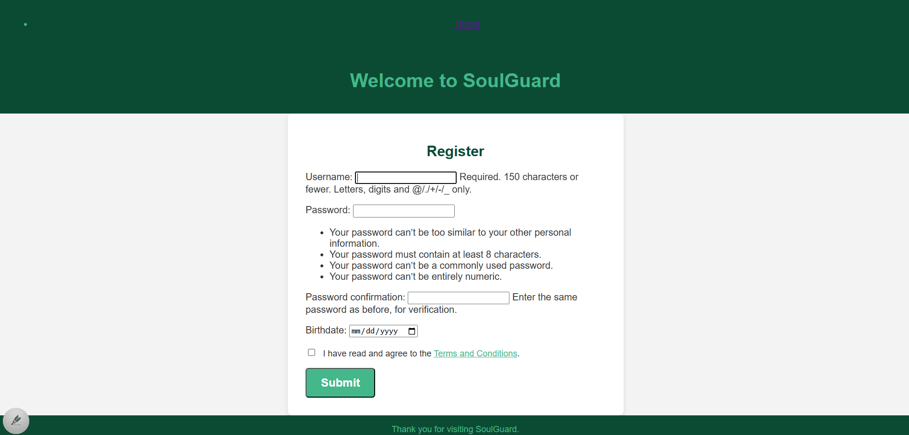
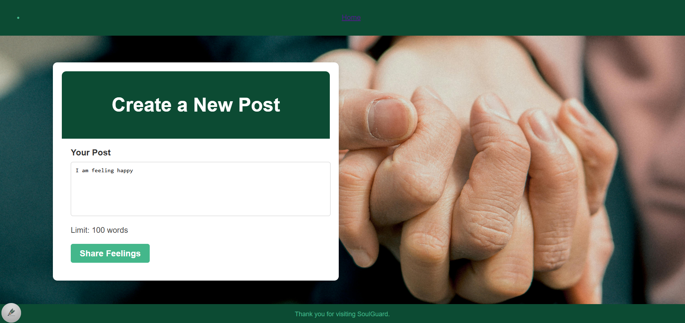

How the App is Built
1. Front-End Overview
The SoulGuard Django Project front-end is designed to support mental health by creating a positive and user-friendly interface. Inspired by the 988 website, it features a professional layout with carefully selected header and footer formatting. Colors were chosen using a color contrast analyzer to meet accessibility standards (4:1 ratio), fostering a comforting visual experience.
The landing page is divided into two sections: For You, focusing on personal well-being, and To Whom You Care, supporting loved ones. Custom visuals and a logo were crafted using Canva and sourced from Pixabay, ensuring an uplifting and professional design. Privacy and security are integral, with Terms and Conditions, age restrictions (18+), and user authentication required to access features like posting. This front-end design combines aesthetics and functionality to create a safe and engaging user experience.
Sharing below the templates used inside the app:
Home Page:
This is the landing page where users are first directed, featuring two main sections: For You (focused on personal well-being) and To Whom You Care (offering support for loved ones).

Sign In Page:
When a new user clicks on “Explore,” they will be directed to the Sign-In page.
Registration Page:
If the user is new, they can select the “Register” option, which will take them to the registration page to create a username and password.

Create New Post Page:
Once you click on explore button either for you or to whom you care it will take you to share feelings page.

The “Share Feeling” feature leads to the recommendations section, supported by a backend framework that computes both the suicide score and the sentiment score, as detailed below.
2. Back-End Models Overview
To deliver accurate and insightful results, our backend leverages advanced machine learning models and natural language processing techniques. The workflow includes:
Suicide Model :
The suicide detection model is designed with three BiLSTM layers, followed by a flattening layer to process the output. This is then passed through a series of dense layers before reaching the output layer.

Sentiment Model
The sentiment model is a hybrid approach combining TextBlob, VADER sentiment analysis, custom-defined words, and worry-related words derived from the NRC lexicon. The final sentiment score is calculated as a weighted average of these components.

3. Chatbot
The chatbot is designed to provide users with quick and seamless virtual assistance, with the ultimate goal of facilitating a connection to a real agent, such as a therapist, when necessary.
Built with customized intents, the chatbot leverages NLP techniques, including a Count Vectorizer and a Multinomial Naive Bayes classifier, to accurately identify user intents based on their queries. This enables the chatbot to address user questions effectively using predefined responses tailored to their needs.